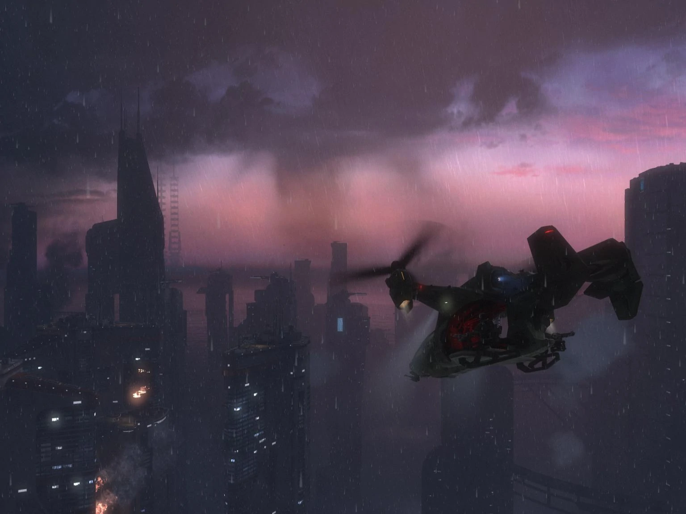
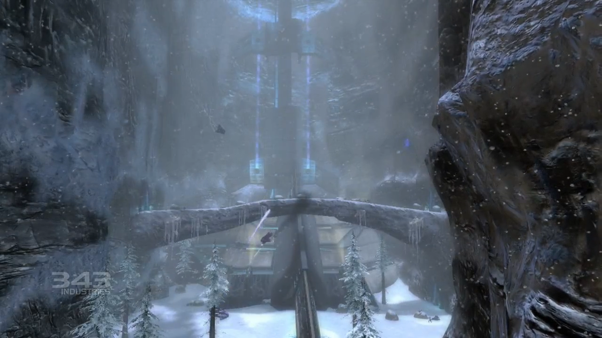
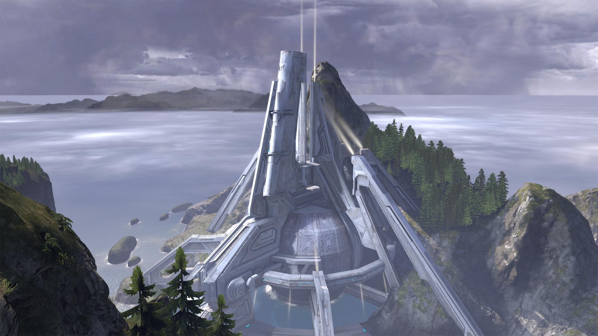
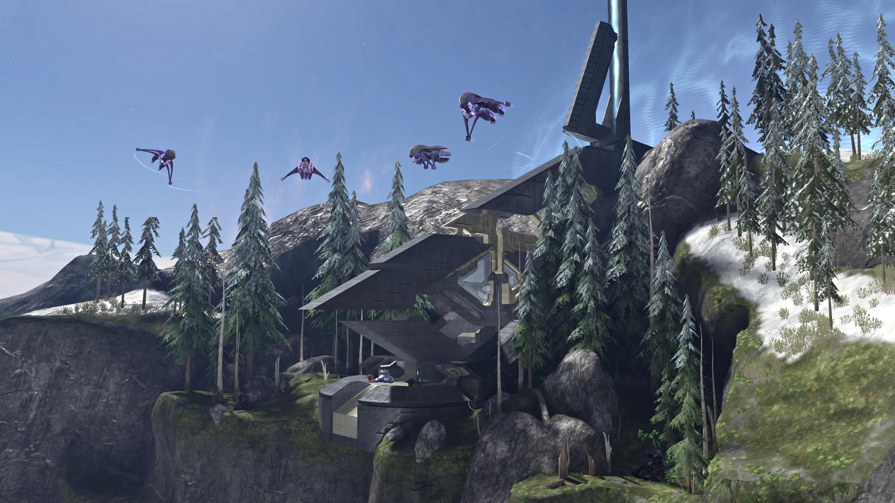

Halo: Reach is a prequal to the first Halo game, taking place on Reach. It is a planet under the attack by the Covenant where Noble Team, a spartan team consisting of six spartans, fight to their last breath to prevent the fall of Reach and guarantee hope for humanity.
Combat Evolved tells the story of Humanity encountering a ring-shaped world known as Halo. The UNSC Pillar of Autumn is chased by an alien faction called the Covenant after escaping a planet called Reach. The Pillar of Autumn is forced to land on the Halo ring, explore it and learn about its true purpose.
Halo 2 takes place after the events of the previous game, where the Covenant are now attacking Earth. The UNSC and Master Chief fight off the Covenant until they retreat to another Halo ring, with the UNSC following them.

The final game of the infamous trilogy follows the UNSC fighting off the Covenant on Earth straight after the second game. They're searching for something that will lead them to the Ark, the place that produces Halo rings. It is up to the UNSC and an unexpected alliance to stop the Prophet of Truth from activating all the seven Halo rings.
This is the Fifth Mission in Reach.
This is the Seventh Mission in Reach.
This is the Second Mission in Halo Combat Evolved.
This is the Fifth Mission in Halo Combat Evolved.
This is the Seventh Mission in Halo 2.
This is the Final Mission in Halo 2.

This is the Sixth Mission in Halo 3.
This is the Seventh Mission in Halo 3.